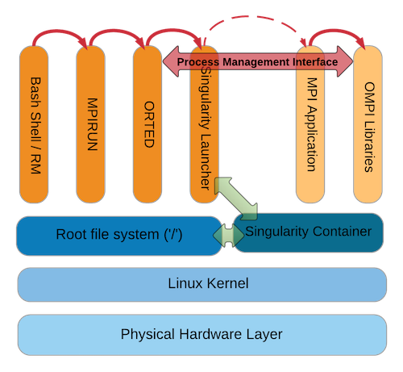

The primary design goal of Singularity is "Mobility of Compute", which is defined as the ability to create, manipulate and manage your personal container image on a system which you control, and then be able to copy that image to any other (binary compatible) Linux host and run within your custom environment on that host; even if you do not have root on that target host!
The implementation of Singularity focuses on application portability within a given container, while maintaining command line work-flow standards (e.g. standard IO, pipes, X11, MPI, networking, sockets, etc..).
Given the following scenario - SERVER is a shared multi-tenant resource to a number of users and as a result it is a large expensive resource far exceeding the resources of my personal workstation. But because it is a shared system, no users have root access and it is a controlled environment managed by a staff of system administrators. To keep the system secure, only the system administrators are granted root access and they control the state of the operating system. If a user is able to escalate to root (even within a container) on SERVER, they can do bad things to the network, cause denial of service to the host (as well as other hosts on the same network), and will have unrestricted access to file systems reachable by the container.
To mitigate security concerns like this, Singularity must limit one's ability to escalate permission inside a container. For example, if I do not have root access on the target system, I should not be able to escalate my access within the container to root either. But if I own this image, there is nothing stopping me from giving myself 'sudo' access or to set root's password (or just remove it). Singularity prevents user context escalation within the container, and thus makes it possible to run on shared infrastructure.
Singularity makes use of a container image file, which physically contains the container. This file is a physical representation of the container environment itself. If you obtain an interactive shell within a Singularity container, you are literally within that file.
Even though that file maybe owned by a particular user, when you enter the container image, you will see that there are files potentially owned by other users (namely root). And as expected, you will not be able to modify these files unless you have permission to do so. So even though you may own the image itself, that does not mean you have permission to modify the contents. To make changes to these files, you must first have root access on the host, and enter the container as root (read more about "Security and privilege escalation").
There are numerous benefits for using a single file to represent the entire container:
The goal of Singularity is mobility, not isolation. This means that the line between host and container can be blurred. Especially considering the user inside of a container is the same user outside the container means that the container becomes an alternative form of the operating environment. Access to one's home directory, shared file systems, and non-operating system directories should be as transparent as possible.
Additionally what name-spaces are selected for virtualization can be dynamic or conditional. For example, for performance reasons Open MPI communicates to Singularity to disable the PID name-space to optimize shared memory communication speed.
Singularity does its best to abstract the complications of running an application in a different environment then what is expected on the host. For example, applications or scripts within a Singularity container can easily be part of a pipeline that is being executed on the host. Singularity containers can also be executed from a batch script or other program (e.g. an HPC system's resource manager) naively.
Some usage examples of Singularity can be seen as follows:
$ sudo singularity create /tmp/Demo.img $ sudo singularity bootstrap /tmp/Demo.img centos.def $ sudo singularity exec --writable /tmp/Demo.img yum install xterm $ singularity shell /tmp/Demo.img Singularity/Demo.img> df -h Filesystem Size Used Avail Use% Mounted on singularity 976M 327M 582M 36% / Singularity/Demo.img> exit $ singularity exec /tmp/Demo.img xterm $ singularity exec /tmp/Demo.img python < /path/to/python/script.py $ cat /path/to/python/script.py | singularity exec /tmp/Demo.img python
MPI is a pretty complicated work-flow, so here is an example of how MPI works through a Singularity container:
... and considering the following command:
$ mpirun -np X singularity exec /path/to/container.img /usr/bin/mpi_program_inside_containerThe work-flow is defined as follows: